講師：白濵 成希
下関市立大学 データサイエンス学部
2026年7月23日(木) 18:10〜19:40
公開の基本手順と停止条件、作品の工夫を安全に伝える。
受講生は授業中に、次を押しません。
PublishGet StartedPublish App公開URLも発行しません。
| AI Studioのプレビュー | 公開後のWebアプリ | |
|---|---|---|
| 主な目的 | 作りながら確認する | 別の端末から使う |
| 開く場所 | Google AI Studio Build | Chrome / Safari |
| 利用者 | 主に作成者 | URLへアクセスした人 |
| 確認 | 画面と基本動作 | ログイン・保存・公開範囲・安全性 |
公開すると、AI Studioの外から開けるURLができます。
Publish の前に点検する「動いた」だけで、すぐ公開しません。
利用できる場合、Google AI Studioから
Cloud Billingを自分で設定せず
Webアプリを公開できます。
例
その場合は、そこで止まります
Publish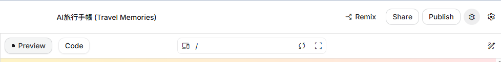
Publish が公開の入口です。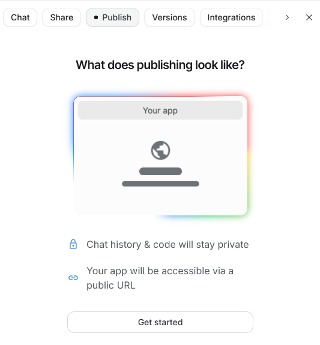
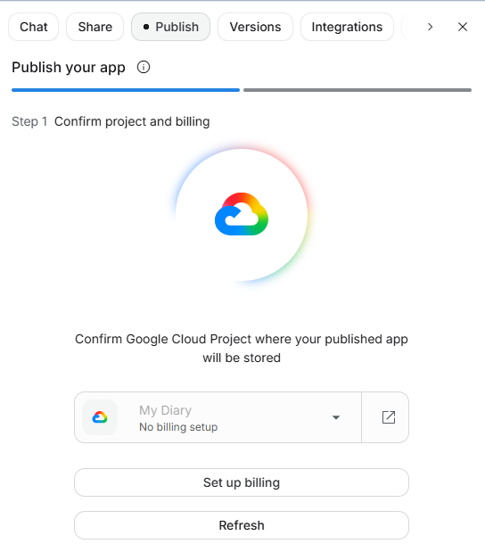
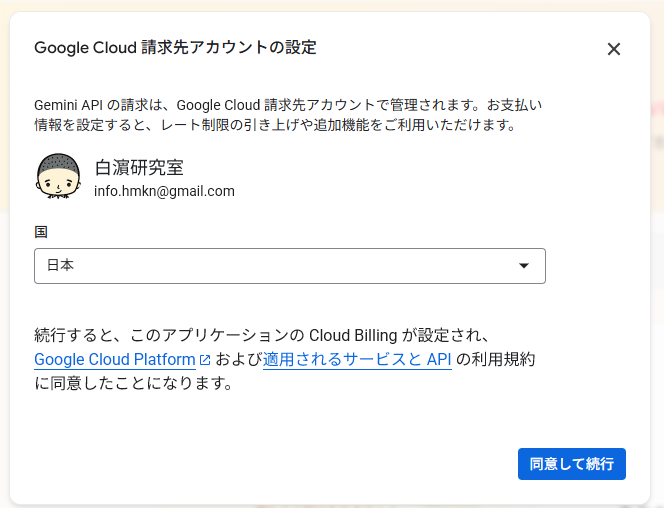
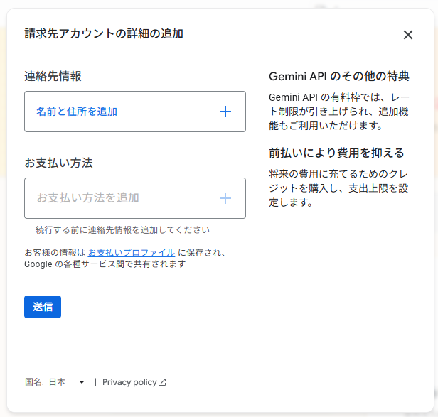
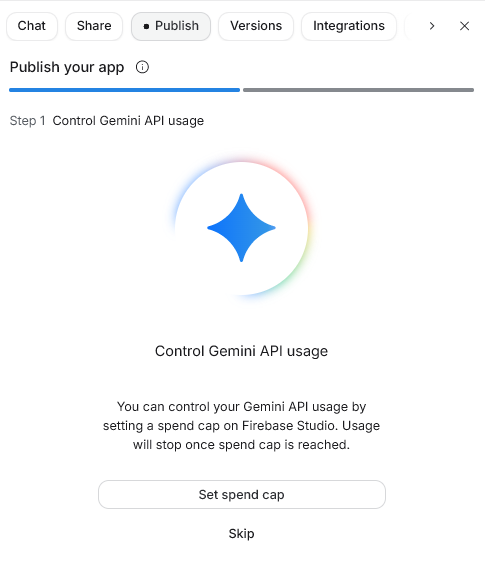
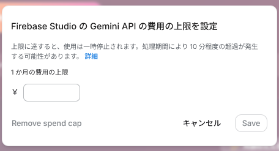
spend cap has been set で設定完了を確認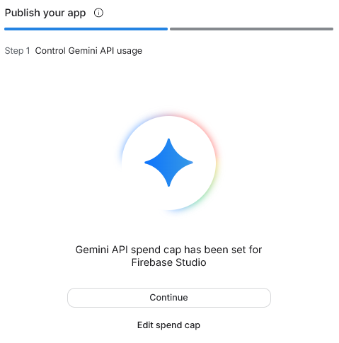
利用可能 は、そのURL候補を使えるという表示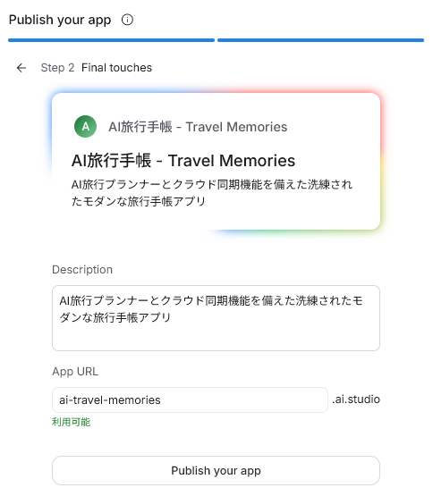
is published! で公開完了Status が Ready なら利用できる状態Visit で公開されたアプリを開ける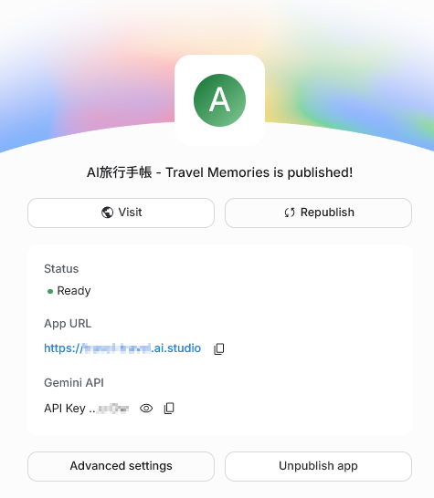
URL例
URLに入れないもの
スマートフォンのブラウザで開きます。
Google AI Studioで作ったWebアプリを、将来自分のスマートフォンから
確認するために公開したいです。
まだPublishは押さず、公開前に確認すべき項目だけを
初心者向けに整理してください。
現在のアプリには、Googleログイン、Firestoreへの保存、
Firestoreからの読み込みがあります。
次の方針を守ってください。
- Cloud Billingは設定しない
- Standard Deploymentへ進まない
- Blazeプランへ変更しない
- 支払い方法やクレジットカードを登録しない
- Cloud Run Consoleを直接操作しない
- APIキーを作成・共有しない
- Security Rulesを広すぎる公開設定にしない
- 実在の個人情報、勤務先情報、顧客情報を使わない
公開前、公開操作中、公開後の3段階に分けて説明してください。
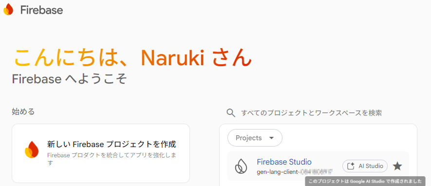
unauthorized-domain が出たら
Firebase: Error (auth/unauthorized-domain)
授業中は操作せず、講師の画面例で確認します。
https:// の後から、最初の / の手前までais-pre-...asia-northeast1.run.apphttps:// や / 以降は入れない授業中は実在のURLを共有しません。
授業中は操作しません。将来自分で公開した場合の確認手順です。
BLAZE プランにアップグレードされました と通知される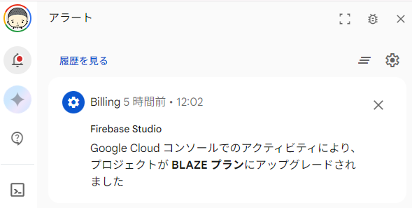
ここからは、作品を安全に共有します。
小さく作り、見て、AIに伝え、もう一度確認する。